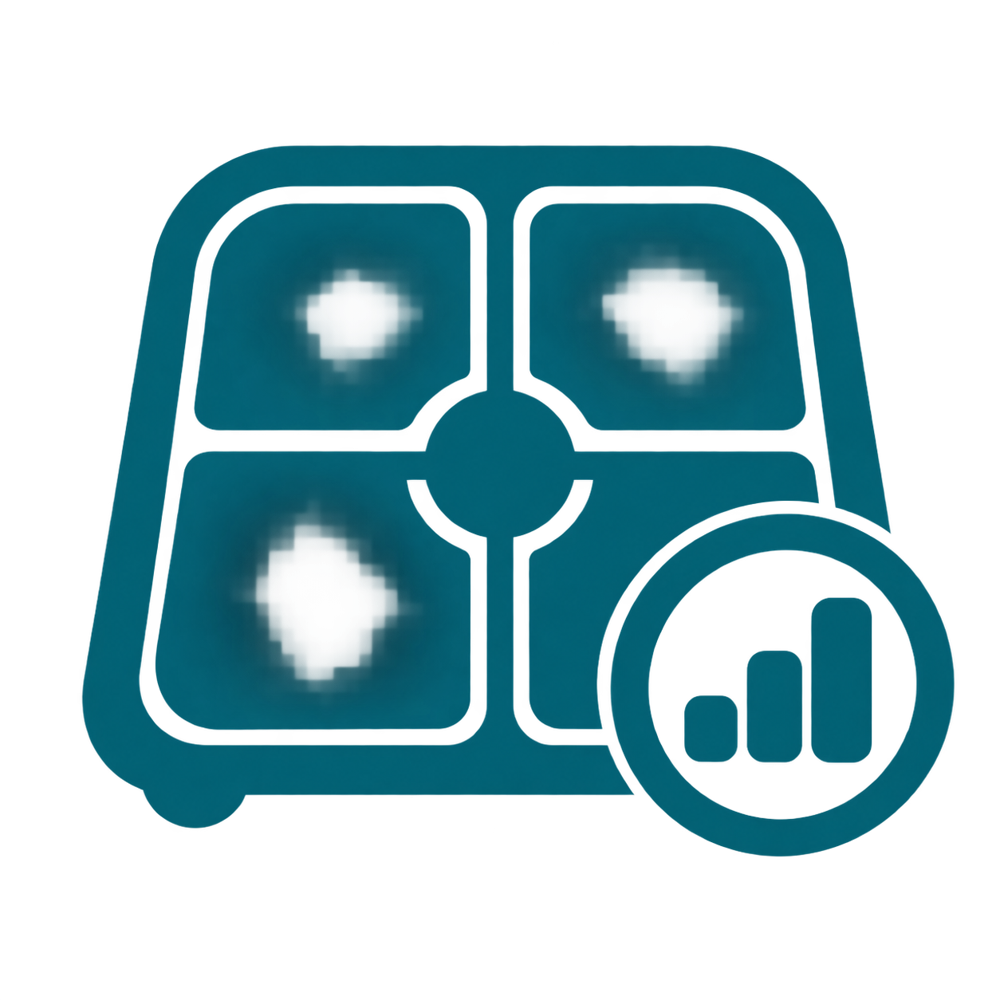
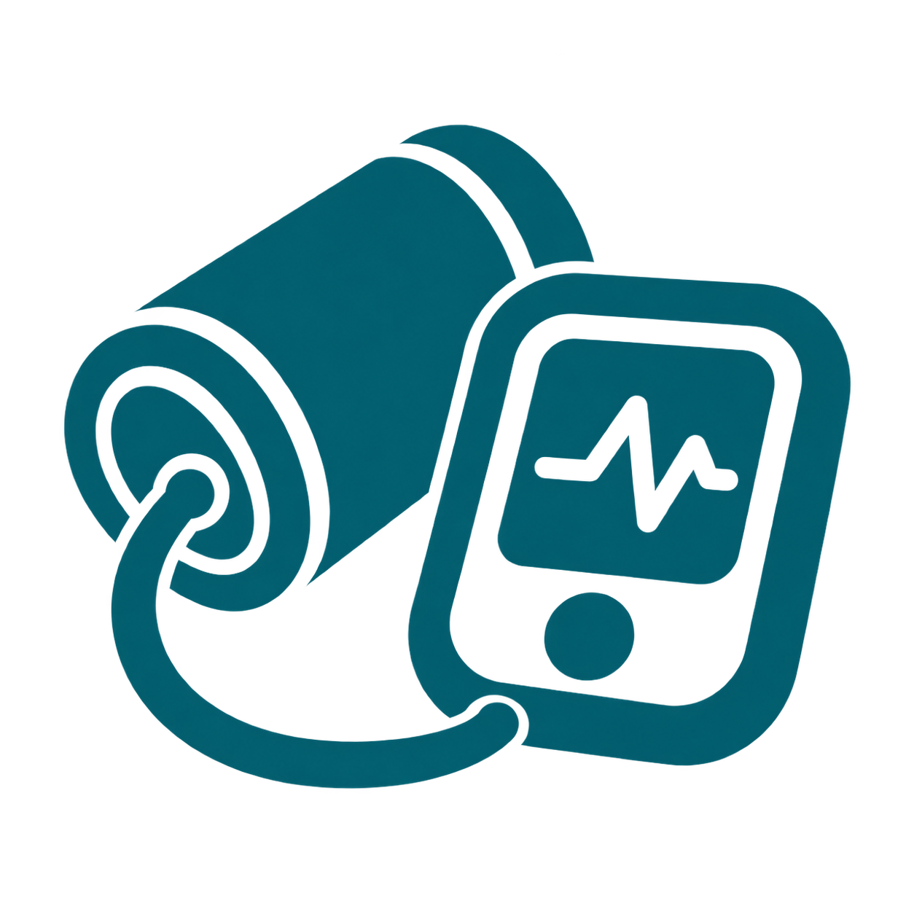

No readings yet
Connect a device or add the first reading to begin.
Home Health Hub branding reference
This static page demonstrates shared presentation rules. It is not a production Hub interface.
Body text uses Atkinson Hyperlegible Next when available and a system fallback otherwise.
Supporting text remains readable and does not rely on low contrast.
Images are decorative here because each visible title already names the function.

WeightReady
Blood PressureLast synced 9:42 AM 3 Blood GlucoseAttention Oxygen SaturationSyncingHealth function
The approved daemon image identifies this Hub-rendered page. The visible title supplies its accessible name.
Measurements rose across five readings. No reading was available for the next interval. The final two readings were lower.
| Day | Value |
|---|---|
| Monday | Example 1 |
| Wednesday | Example 2 |
| Friday | Example 3 |